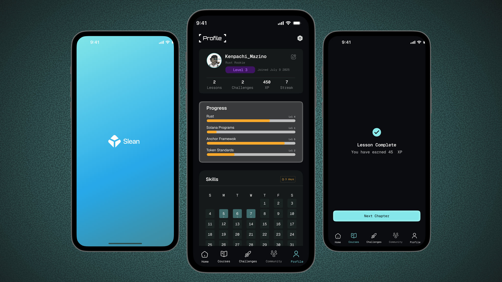
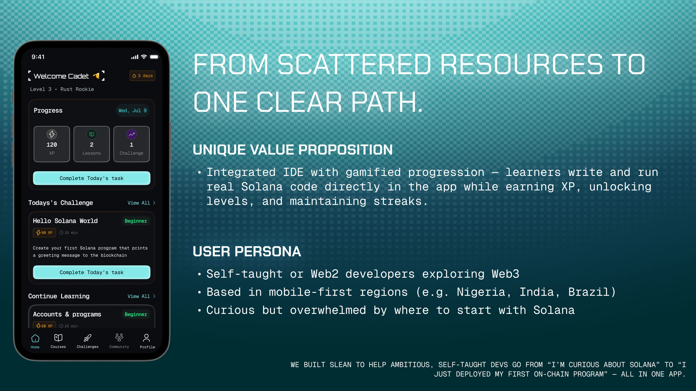
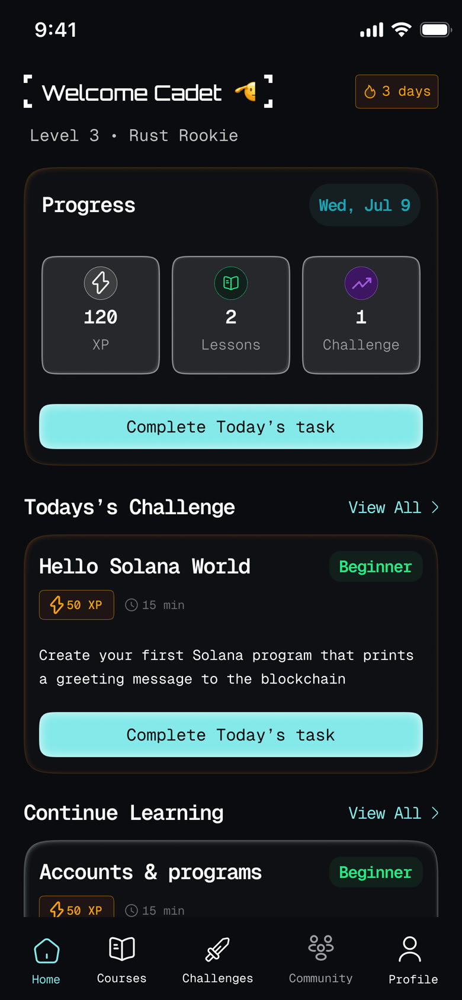
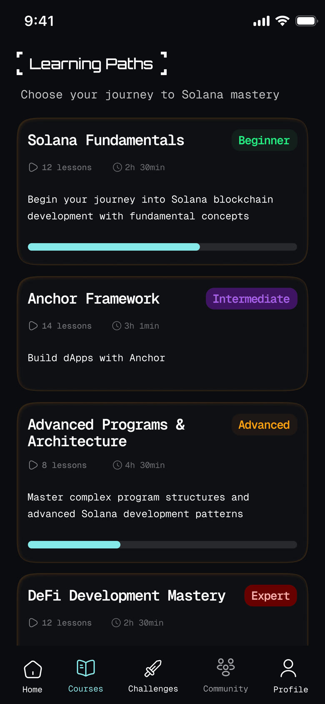
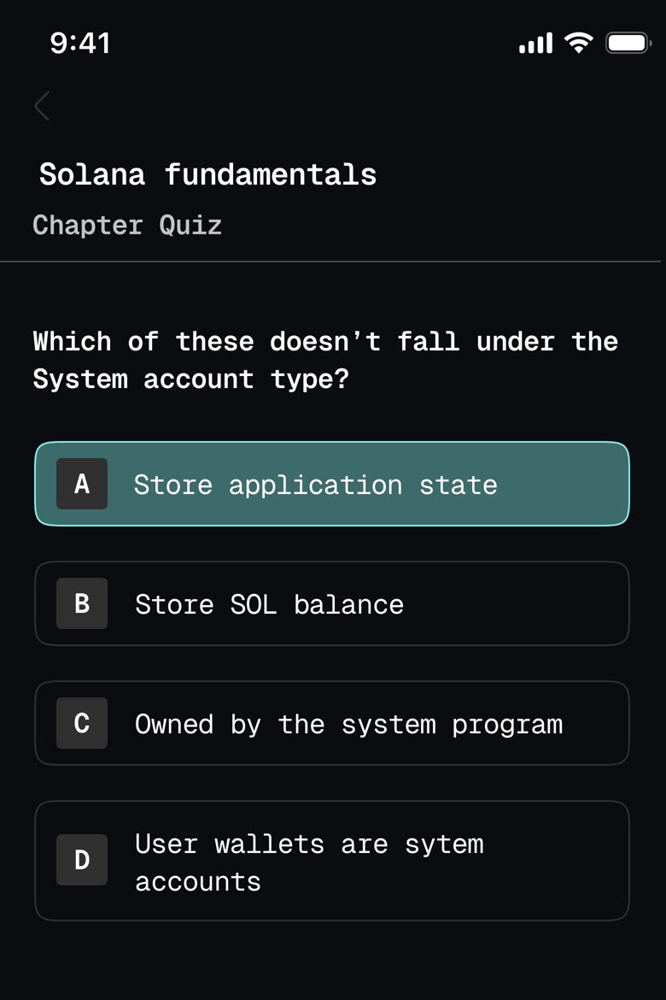
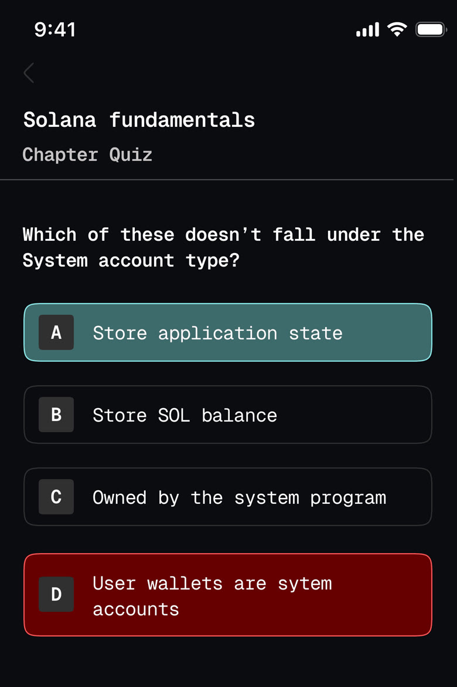
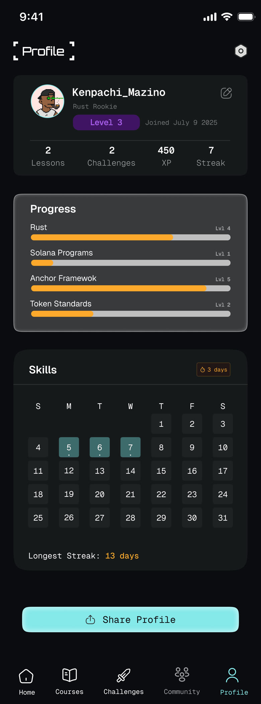

Mobile learning · Solana
Slean
A mobile-native learning platform that takes a self-taught developer from "I'm curious about Solana" to "I just deployed my first on-chain program", without ever leaving the app.

The problem
Learning Solana development means assembling your own curriculum out of scattered docs, half-finished YouTube series, Discord threads and example repos that no longer compile. There's no obvious first step, no way to tell whether you're ready for the next thing, and nothing to show for the hours you put in.
The people worst served by that are exactly the people the ecosystem needs: self-taught or Web2 developers, often in mobile-first regions like Nigeria, India and Brazil, curious about Solana but overwhelmed by where to start. Many of them don't have a desktop dev environment to fall back on.
Slean's premise was to collapse that scattered path into one, and to put it somewhere they already are, a phone.

The core tension
The hard part of this project wasn't the interface. It was a genuine conflict between two things the product had to be at once.
Gamification pulls toward delight, rewards, quick wins, badges, streaks, leaderboards. Solana development pulls toward rigour, Rust, the account model, transaction fees, security pitfalls, deploying to testnet, debugging when it breaks.
Lean too far into game mechanics and learners optimise for the badge: racing through tasks, collecting XP, understanding none of the hard parts. Lean too far into rigour and it reads like documentation, motivation collapses, and they churn in week one.
Every mechanic in the app had to be judged against that tension rather than designed for its own sake.
Design approach
Reward the work, not the tapping
XP attaches to things that require actual understanding, completing a lesson, passing a chapter quiz, finishing a challenge, making a real deployment, rather than to opening the app or scrolling a page. The daily streak measures showing up, which is the habit worth building, but it never substitutes for progress: the profile tracks Rust, Solana Programs, Anchor Framework and Token Standards as separate skill levels, so a long streak with shallow knowledge has nowhere to hide.
One next action, always
The home screen answers a single question: what do I do today? A progress card carries the day's XP, lessons and challenge counts, and one primary button, Complete Today's task. Underneath it, today's challenge is already chosen, sized ("50 XP · 15 min") and described in a sentence. The decision of what to learn next, the thing that stalls self-taught learners, is made by the app, not the person.
Code in the app, not alongside it
An integrated editor lets learners write and run real Solana code on the phone. This is what separates Slean from a quiz app: the reward loop wraps around genuine execution, so XP is earned by code that compiles rather than by answers recalled. It also removes the desktop prerequisite that quietly excludes the mobile-first audience the product is for.
Structuring the path
Courses are organised as learning paths with an explicit difficulty ladder, Solana Fundamentals (Beginner), Anchor Framework (Intermediate), Advanced Programs & Architecture, then DeFi Development Mastery (Expert). Each path shows its lesson count, time commitment and a progress bar before you commit to it.
Two details do a lot of work here. Showing "12 lessons · 2h 30min" up front makes the investment honest, which matters for learners who have been burned by tutorials that trail off. And keeping partially-complete paths visibly in progress, rather than resetting them, makes returning after a gap feel like resuming rather than restarting.


Feedback that teaches
Quizzes sit between chapters, and their job isn't scoring, it's catching a misunderstanding before it compounds into a broken deployment. Right and wrong answers are colour-coded immediately, and both outcomes open an explanation panel. Getting it wrong isn't a dead end with a retry button; it's where the actual teaching happens.


The profile closes the loop. Skill bars per topic, a streak calendar, a longest-streak record and a Share Profile action turn scattered study into something a learner can point at, which, for a self-taught developer with no credential to show, is part of the value of finishing at all.

What it achieved
Balancing the two pulls, layered core learning, optional quests, real deployments, adaptive branching and human feedback, produced results across four areas:
- Deeper mastery. Learners who completed core modules plus bonus quests made noticeably fewer deployment errors, and understood Solana's transaction and account models better, than those who did core content alone.
- More confidence. After peer and mentor review, learners reported being more comfortable writing secure Solana programs, debugging contracts and deploying to testnet.
- Fewer drop-offs. Adaptive difficulty and branching paths kept more users past the early modules, and side-quests gave people a reason to stay once the basics were done.
- More engaged practice. Real tasks and deployments moved activity from passive reading toward writing and shipping code.